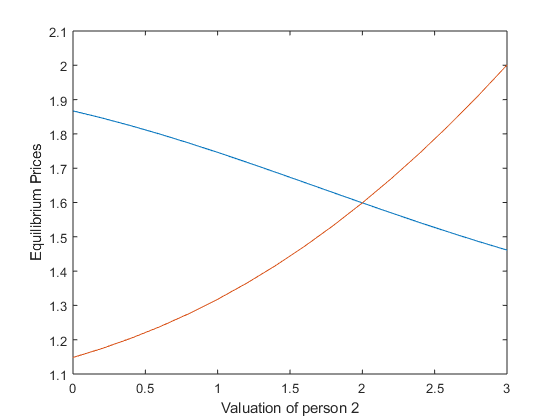

Contents
Question 1
D_A=exp(1)/(1+2*exp(1));
fprintf('Demand assuming Price is 1: %f\n', D_A);
Demand assuming Price is 1: 0.422319
Question 2
p=[1;4];v=[2;2]; % Initial values of function and Jacobian [fval, iJacTemp]=cournot_hw2(p,v); iJac=inv(iJacTemp); % Broyden Iterations maxit=10000; tol=1e-10; tic for i=1:maxit fnorm = norm(fval); if norm(fval) < tol fprintf('i %d: P(A) = %f, P(B) = %f, norm(f(x)) = %.8f\n', i, p(1), p(2), norm(fval)); break end d=-(iJac*fval); p=p+d; fOld=fval; fval=cournot_hw2(p,v); u=iJac*(fval-fOld); iJac=iJac+((d-u)*(d'*iJac))/(d'*u); end toc
i 10: P(A) = 1.598942, P(B) = 1.598942, norm(f(x)) = 0.00000000 Elapsed time is 0.010425 seconds.
Question 3
%Initil values p2=[1;4]; p2Old=[5,5]; fOld=cournot_hw2(p2Old,v); tic for j=1:maxit fval=cournot_hw2(p2,v); if norm(fval)<tol fprintf('j: %d, P(A): %f, P(B): %f, norm(f(p)): %f\n',j,p2(1),p2(2),norm(fval)); break else % d_n=cournot_hw2(p2); % d_ol=cournot_hw2(p2Old); p2_A=p2(1)-(p2(1)-p2Old(1))*fval(1)/(fval(1)-fOld(1)); d_gaussSidel=cournot_hw2([p2_A;p2(2)],v); p2_B=p2(2)-(p2(2)-p2Old(2))*d_gaussSidel(2)/(fval(2)-fOld(2)); p2Old=p2; fOld=fval; p2=[p2_A;p2_B]; end end toc
j: 49, P(A): 1.598942, P(B): 1.598942, norm(f(p)): 0.000000 Elapsed time is 0.005708 seconds.
Question 4
%Initial value of Prices p3=[1;1]; p3Old=5*p3; %The demand at a price. D=@(p)[(exp(2-p(1)))/(1+exp(2-p(1))+exp(2-p(2)));(exp(2-p(2)))/(1+exp(2-p(1))+exp(2-p(2)))]; tic for k=1:maxit fnorm=norm(cournot_hw2(p3,v)); pnorm=norm(p3-p3Old); if pnorm<tol fprintf('k %d: P(A) = %f, P(B) = %f, norm(f(x)) = %.8f\n', k, p3(1), p3(2), fnorm); break end p3Old=p3; p3New=(ones(2,1)-D(p3)).^(-1); p3=p3New; end toc
k 19: P(A) = 1.598942, P(B) = 1.598942, norm(f(x)) = 0.00000000 Elapsed time is 0.006317 seconds.
Question 5
I'm going to use Broyden to solve this.
v2=0:0.2:3; v1=repmat(2,1,length(v2)); v=[v1;v2]; p_out=ones(2,length(v2)); for l=1:length(v2) p_out(:,l)=broyden_cournot(v(:,l)); end %plot plot(v(2,:),p_out(1,:),v(2,:),p_out(2,:)); xlabel('Valuation of person 2'); ylabel('Equilibrium Prices');
i 9: P(A) = 1.867082, P(B) = 1.148094, norm(f(x)) = 0.00000000 i 9: P(A) = 1.846454, P(B) = 1.174272, norm(f(x)) = 0.00000000 i 9: P(A) = 1.823888, P(B) = 1.204095, norm(f(x)) = 0.00000000 i 9: P(A) = 1.799509, P(B) = 1.237822, norm(f(x)) = 0.00000000 i 10: P(A) = 1.773502, P(B) = 1.275688, norm(f(x)) = 0.00000000 i 10: P(A) = 1.746108, P(B) = 1.317897, norm(f(x)) = 0.00000000 i 10: P(A) = 1.717609, P(B) = 1.364621, norm(f(x)) = 0.00000000 i 10: P(A) = 1.688320, P(B) = 1.415997, norm(f(x)) = 0.00000000 i 10: P(A) = 1.658566, P(B) = 1.472132, norm(f(x)) = 0.00000000 i 10: P(A) = 1.628671, P(B) = 1.533099, norm(f(x)) = 0.00000000 i 10: P(A) = 1.598942, P(B) = 1.598942, norm(f(x)) = 0.00000000 i 10: P(A) = 1.569658, P(B) = 1.669674, norm(f(x)) = 0.00000000 i 11: P(A) = 1.541062, P(B) = 1.745280, norm(f(x)) = 0.00000000 i 11: P(A) = 1.513357, P(B) = 1.825718, norm(f(x)) = 0.00000000 i 10: P(A) = 1.486702, P(B) = 1.910922, norm(f(x)) = 0.00000000 i 10: P(A) = 1.461215, P(B) = 2.000803, norm(f(x)) = 0.00000000